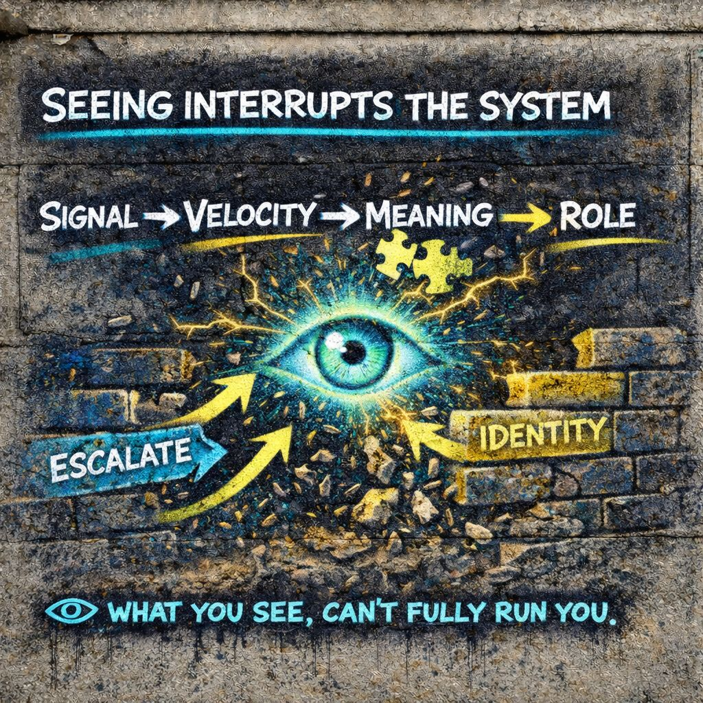

👁️ Observation
can’t fully run you.”
⚡ Spike
👁️ Notice
🧩 Slow
🎭 Optional
🧱 Flexible
👁️ See it…
and it loosens.
📍 Foundation
Everything so far runs like a chain reaction:
Left alone, it continues automatically.
Then something strange happens:
Not analyze.
Not fix.
Not argue.
Just… see it happening.
And that changes the system.
⚙️ Core Definition (IPT)
Not after.
Not in hindsight.
🧠 Why This Matters
Most of the system runs on autopilot:
- fast pattern recognition
- automatic interpretation
- identity alignment
- role execution
Observation interrupts that by introducing:
that is not fully inside the reaction
📡 What Observation Does To The Chain
Without Observation
With Observation
That 👁️ creates friction.
Not resistance.
Enough to:
- slow velocity
- delay meaning lock
- weaken identity snap
⚡ Observation vs Control
Important distinction:
You are not:
- forcing a new belief
- suppressing a reaction
- replacing the system
You are:
that it can’t run blindly
🧩 Why Seeing Changes It
The system relies on:
- speed
- invisibility
- automatic execution
Observation removes invisibility.
it can’t behave the same way.
Even if it still happens, it loses total control.
🎯 What Observation Feels Like
You might notice:
- “That hit fast.”
- “I’m about to react.”
- “This is locking in.”
- “I’m shifting into a role.”
- “This feels like pressure from the crowd.”
Not disconnection.
Just enough space to see.
🌪 Observation Inside Failure Mode
This is where it matters most.
“I’m getting pulled.”
During defensiveness:
“I’m protecting something.”
During performance:
“I’m playing a role.”
During collapse:
“I’m losing structure.”
That moment of noticing can prevent full takeover.
🧠 Micro-Level Timing
Observation lives in a very small window:
and 🧩 meaning lock
If You Miss It
- meaning locks
- identity engages
- system runs
If You Catch It
- the chain slows down
- interpretation reopens
- reaction becomes optional
🔍 Types Of Observation
- Signal Observation
“Something just entered.” - Velocity Observation
“That was fast.” - Meaning Observation
“I’m interpreting this as…” - Role Observation
“I’m shifting into a role.” - Identity Observation
“This feels like me.”
⚠️ Limits Of Observation
IPT stays honest here.
- it doesn’t stop everything
- it doesn’t remove emotion
- it doesn’t eliminate identity
But it does:
Which is huge.
🔓 What It Restores
Observation gives back:
- choice
- timing
- flexibility
- reinterpretation
- self-awareness
Not perfectly.
🌐 Observation vs Generalized Other
Instead of:
Observation introduces:
That shift breaks the illusion of certainty.
🎭 Observation vs Role-Taking
Instead of becoming the role, you see yourself entering it.
acting
and
being acted through
🧱 Observation vs Identity
Instead of:
You get:
That keeps identity flexible.
🔥 IPT Edge
Mead Explains
how the self forms through interaction
IPT Introduces
the ability to observe that formation in real time
👁️ Final Distillation
It stops the system from being invisible.
can’t fully run you.
⚡ Spike
👁️ Notice
🧩 Slow
🎭 Optional
🧱 Flexible
👁️ See it…
and it loosens.
📚 Related IPT Concepts
Observation is connected to many other IPT concepts. It’s a key part of the overall framework.
- Signal Awareness
- Generalized Other
- Velocity
- Meaning Lock
- Role-Taking
- Failure Modes
- Identity Stabilization
- Signal Recognition
Each of those concepts interacts with observation. Together, they form a comprehensive toolkit for understanding identity and social dynamics.
and you see them all.
Observation is the gateway to the whole system.
The more you can observe, the more you can understand and navigate the complex forces at play.
So keep exploring, keep observing, and keep learning.
It’s your playground.
What you can see…
can’t fully run you.